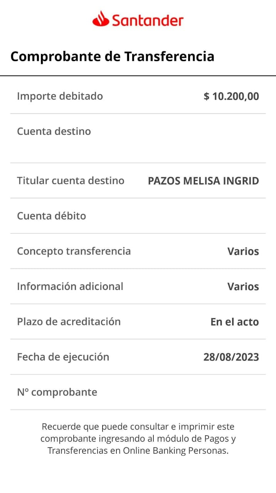

❤ Dani y Eze ❤
Para conocer el regalo que les hicimos Maite, Meli y Mati respondan 5 preguntas correctamente 😆
¡Siguiente pregunta!
¡Hay
0
correctas de 5!
¡Volver a intentarlo!
¡Acá esta su regalo!
